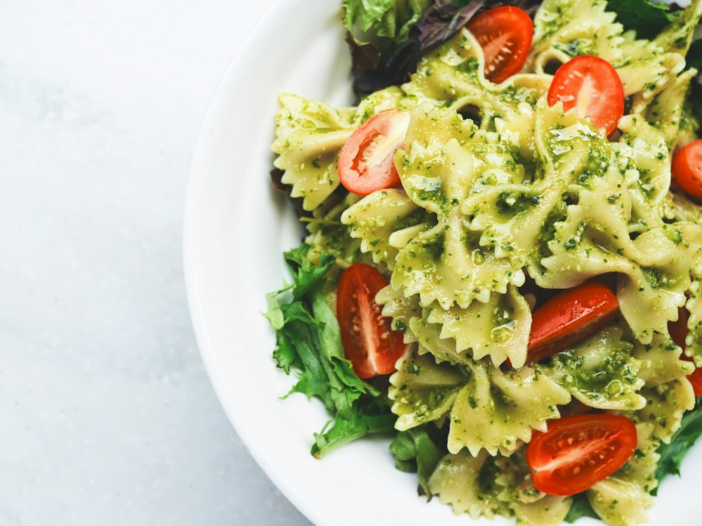

✦ Выбор OnlyGuests Рейтинг 4.9+ и больше 1000 оценок гостей в 2ГИС
Nuala
Ресторан · Средиземноморская · Алматы
Рейтинг 2ГИС
★ 4.9
1 317 оценок
Год открытия
нет данных
в открытых источниках не нашли
Средний чек
16 000 ₸
по данным 2ГИС
Адрес и часы
📍 ул. Богенбай батыра, 134, Алматы · Алмалинский район
🕒 вс-чт 11:00-24:00, пт-сб 11:00-01:00
Удобства
О заведении
Средиземноморский ресторан с верандой.
Меню
Рядом в справочнике
Nomad Grill · Noni · Noodles · Oblako lounge bar · Ocean Basket · Okadzaki